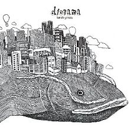
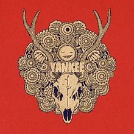
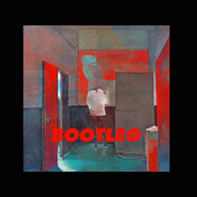

Kenshi Yonezu (米津 玄師, Yonezu Kenshi) is a Japanese musician, singer-songwriter, record producer and illustrator who began releasing Vocaloid music under the stage name Hachi (ハチ) in 2009. In 2012, he debuted under his real name, releasing music with his own voice. He sold 4.2 million physical copies and more than 7 million digital copies in Japan.
Kenshi Yonezu was born on March 10, 1991, in the rural part of Tokushima, Japan. As a child, Yonezu found it difficult to communicate with other people, especially his father. Yonezu typically felt that his mother understood him. He was diagnosed with autism after the age of 20 and also has Marfan syndrome.
Early Musical Career
Yonezu's first foray into music was in 2006 during his second year of junior high school, where he formed a band with his friend Hiroshi Nakajima, called Late Rabbit Edda, to play for the school culture festival. Yonezu wrote songs for the band, and between April 2008 and March 2009 uploaded 24 original songs to video sharing website Nico Nico Douga using the name Hachi. Yonezu created his blog in this period, and called it Tekitō Edda (適当EDDA).
Yonezu moved to Osaka after high school, and started attending a fine arts school. While a student there, he started uploading songs using Vocaloid software Hatsune Miku instead, which were increasingly popular. His 2009 song "Musunde Hiraite Rasetsu to Mukuro" (結ンデ開イテ羅刹ト骸) was his first song to receive over 1,000,000 views on the site. Yonezu had uploaded over 30 songs sung by himself, he deleted them when his Vocaloid songs became more popular. Yonezu renamed his blog Denshi-chō Hachibangai (電子帖八番, "Electronic Notebook 8th Avenue"), and it was one of five blogs awarded the Diamond Award at the 2009 WebMoney Awards.
[For more information of his early music career,Click Here !]
Debut
In March 2011, Yonezu and seven other musicians created Balloom, an independent music label for Internet musicians to widen their musical opportunities. His debut album released in 2012, Diorama, debuted at number 6 and sold over 45,000 copies,becoming the biggest release on the label to date.
Yonezu was picked up as a major label artist under Universal Sigma, and debuted in May 2013 with the single "Santa Maria."
Kenshi Yonezu released his second album, Yankee, on April 23, 2014, followed by the first concert in his career on June 27. Yonezu continued to rise in popularity with the release of albums Bremen in 2015 and Bootleg in 2017. Driven by hit singles "Uchiage Hanabi," "Loser," "Orion," and "Peace Sign," Bootleg won Album of the Year at the 60th Japan Record Awards and shot Yonezu to national stardom.
[For furthermore information about his debuts, Click Here !]
Discography
Diorama Diorama is the first album by Japanese musician Kenshi Yonezu, which was released on May 16, 2012. It was the first studio album released under his real name, and the first to use his own voice as opposed to his Vocaloid albums released under the name Hachi.
Yankee Yankee is the second studio album by Japanese musician Kenshi Yonezu and fourth original album release. It was released on April 23, 2014, followed by his first live concert on June 27, 2014. It was selected as best album of the year by iTunes in 2014.
Bootleg Bootleg is the fourth album by Kenshi Yonezu, released on November 1, 2017. It is his first album with Sony Music and won the Album of the Year award at the 60th Japan Record Awards.
Stray Sheep Stray Sheep is the fifth album by Kenshi Yonezu, released on August 5, 2020. The name of the album was inspired by the New Testament. The song "Kanden" has been used as the theme song of the comedy TV series MIU404. The album sold over 879,000 copies in its first week, debuting atop the Oricon Albums Chart.
 Stray Sheep
Stray Sheep